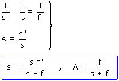

c) Aplicando las ecuaciones de la lente:  Si la distancia objeto-lente es mayor que la distancia focal, el término (s + f ') será negativo y por tanto s' será positivo y A será negativo. Es decir la imagen se formará a la derecha de la lente y estará invertida (Real) Construcción gráfica
|